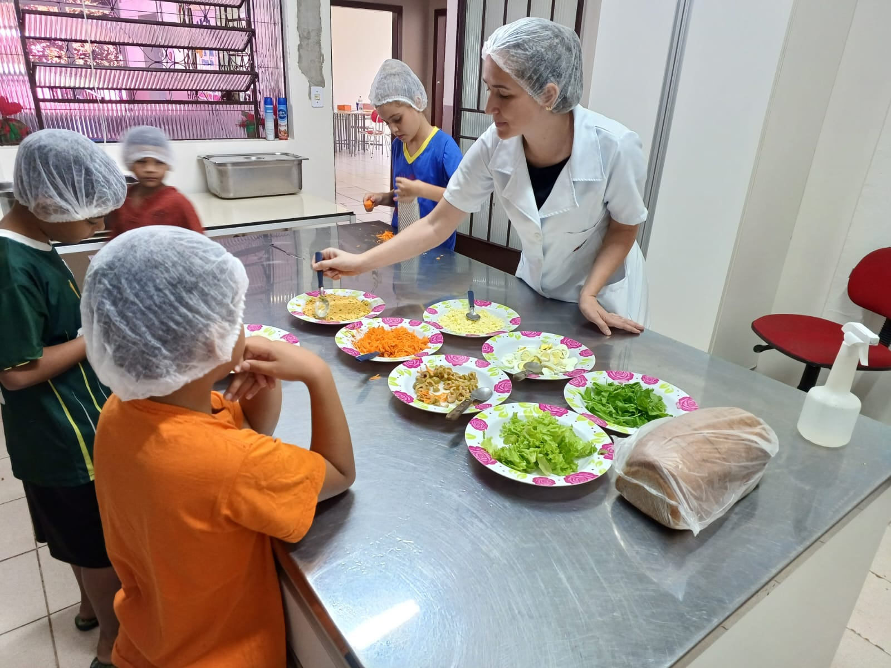
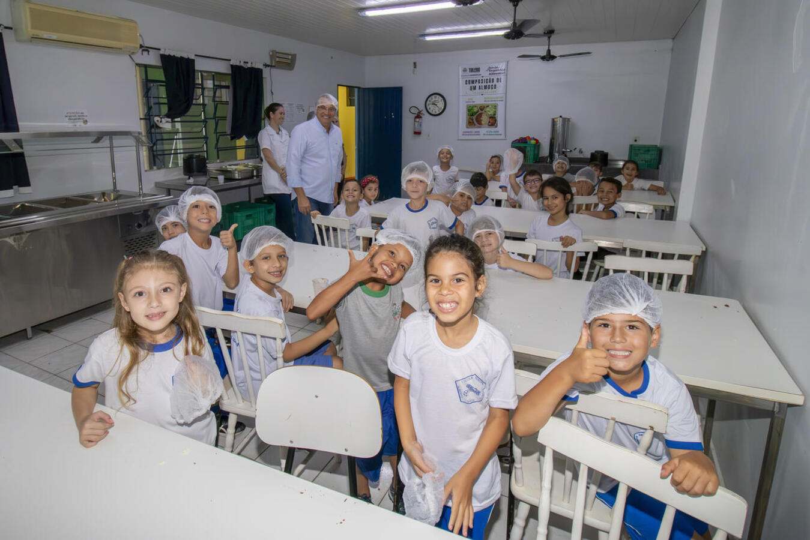

A Educação Alimentar e Nutricional (EAN) é desenvolvida pelos nutricionistas da Unidade Central de Produção de Alimentos como objetivo de fazer com que a população adote práticas autônoma e voluntárias de hábitos alimentares saudáveis.
Diversas atividades tem sido desenvolvidas na área da EAN, todas buscando atender a algum público que rotineiramente acessa os programas ofertados pela Unidade Central de Produção de Alimentos como, por exemplo:
Avaliação e orientação Nutricional nos Restaurantes Populares;
Oficina de culinária


Ações educativas nas escolas municipais

Palestras com orientações para PROJOVEM e CJU;
Palestras para o público idoso;
Projeto “Florir + Saúde”
Projeto Visita na Cozinha
